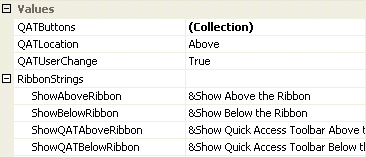

Ribbon Quick Access Toolbar
Use the quick access toolbar to allow one click access to common functionality in your application. The quick access toolbar looks like a traditional toolbar and can be placed either above or below the main ribbon control area. If there are too many entries in the toolbar to show them all at once then an extra overflow button is shown so that you can click and see a pop up with the additional entries. The user can use the customize button to change the visible state of the individual toolbar entries.
Quick Access Toolbar Properties
You can see in Figure 1 the ribbon properties relating to the quick access toolbar.

Figure 1 - Quick Access Toolbar Properties.
QATButtons
This is a collection property that defines each of the quick access toolbar button entries. To add, remove or modify new entries click this property and use the collection editor. Note that some of the changes you make inside the collection editor will not update the ribbon control until you have exited the collection editor.
QATLocation
By default the quick access toolbar will be positioned above the ribbon and next to the application button. You can alter this property to QATLocation.Below in order to have the toolbar placed in a bar on its own below the main ribbon area. If you like to completely remove it from being displayed then use the QATLocation.Hidden setting.
QATUserChange
When the user clicks the customize button a context menu is shown that by default shows a list of all the quick access toolbar entries along with the visible state of those entries. Visible entries are checked and hidden entries not checked. At runtime the user can select the entries in order to toggle the visibility. If you need to prevent the user from altering the visible state then set this property to False. This will cause the customize button to show a context menu that does not show any toolbar entries.
ShowAboveRibbon
ShowBelowRibbon
ShowQATAboveRibbon
ShowQATBelowRibbon
There are two different context menus for the ribbon control that allow the user to switch the location of the quick access toolbar at runtime between above and below. These four string properties define the text that is shown for the context menu items. The properties are localizable so you can update the text with a string that is appropriate for the selected culture.